Episode 629: overlays from the newly trained models
Magenta is the recorded ground truth in every image. Each image uses the same unannotated camera frame. Select a model on the right and compare it with the original pretrained model on the left.
These are the first 24 recorded flow pairs of each leg, not complete legs. No scale or rotation was fitted. The blank area below RGB is the existing extended projection canvas. X marks the endpoint; the white square is the start. Dotted lines continue beyond the analytic canvas gate.
Trained referenceTrained soft maskTrained yaw-localTrained mask + yaw-localOriginal pretrained yaw
Leg 00


| Model | Mean ground error | Endpoint ground error | Mean pixel error |
|---|---|---|---|
| Trained reference | 14.34 cm | 36.31 cm | 95.57 px |
| Trained soft mask | 12.19 cm | 32.56 cm | 84.51 px |
| Trained yaw-local | 7.45 cm | 10.88 cm | 62.57 px |
| Trained mask + yaw-local | 6.50 cm | 10.51 cm | 54.91 px |
| Original pretrained yaw | 10.25 cm | 27.97 cm | 68.71 px |
Use the ground error when perspective makes the pixel paths hard to judge. These short diagnostic windows do not replace the matched validation benchmark.
Ground paths and errors
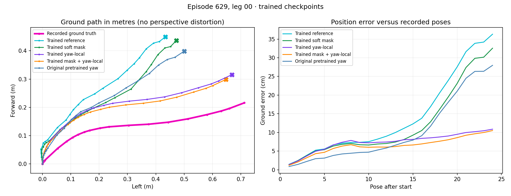
All five models on the camera image
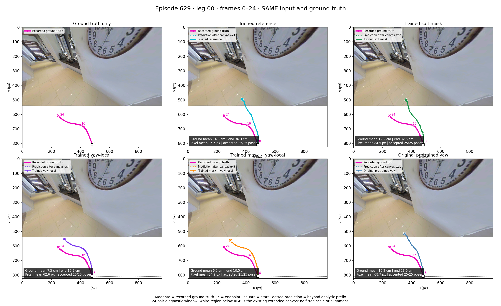
Common crop of all five predictions
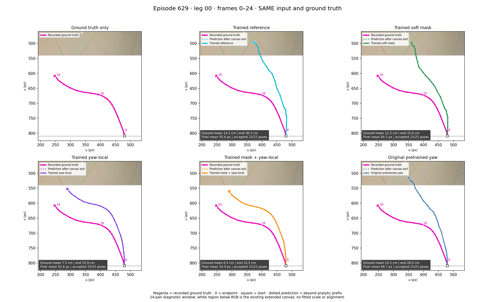
Learned attention on raw frames

Soft reliability and geometric prior

Leg 02
Original pretrained checkpoint

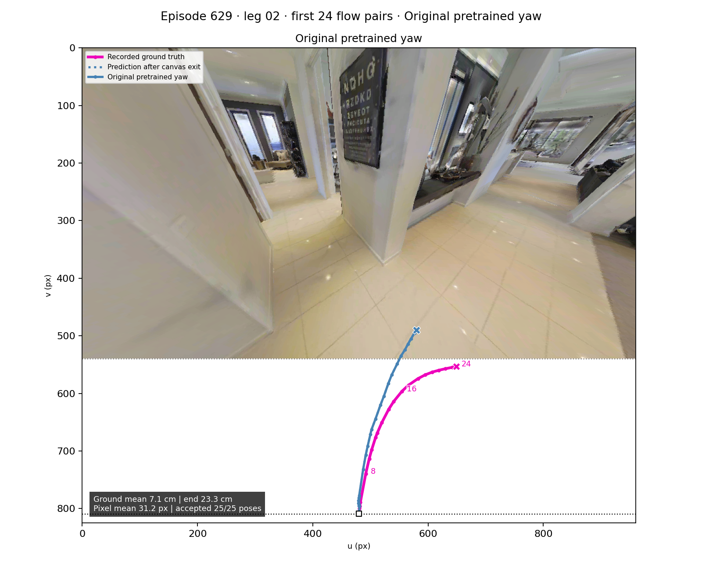

| Model | Mean ground error | Endpoint ground error | Mean pixel error |
|---|---|---|---|
| Trained reference | 6.01 cm | 21.34 cm | 30.91 px |
| Trained soft mask | 6.30 cm | 21.90 cm | 33.57 px |
| Trained yaw-local | 2.82 cm | 6.88 cm | 15.29 px |
| Trained mask + yaw-local | 3.59 cm | 9.52 cm | 14.71 px |
| Original pretrained yaw | 7.08 cm | 23.30 cm | 31.21 px |
Use the ground error when perspective makes the pixel paths hard to judge. These short diagnostic windows do not replace the matched validation benchmark.
Ground paths and errors
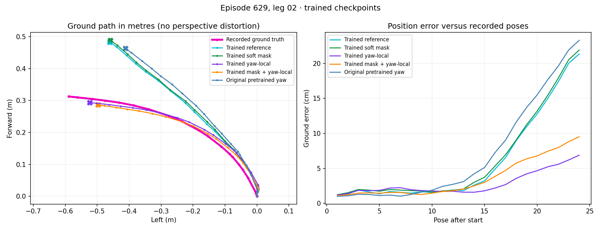
All five models on the camera image
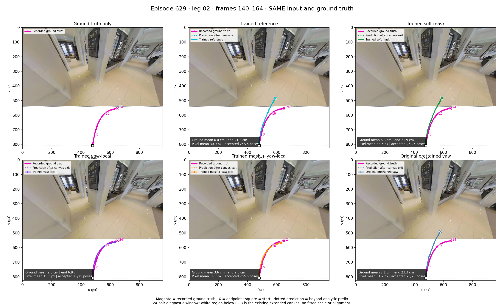
Common crop of all five predictions
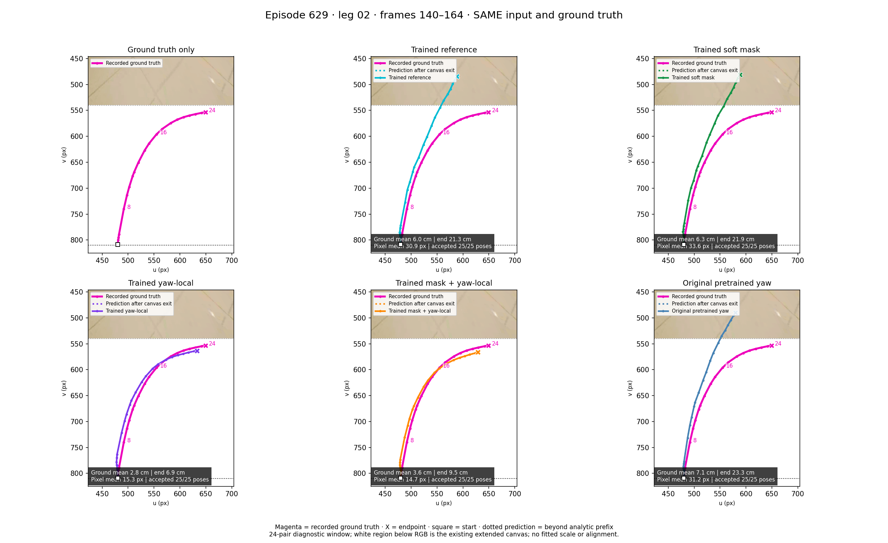
Learned attention on raw frames

Soft reliability and geometric prior

Leg 03
Original pretrained checkpoint

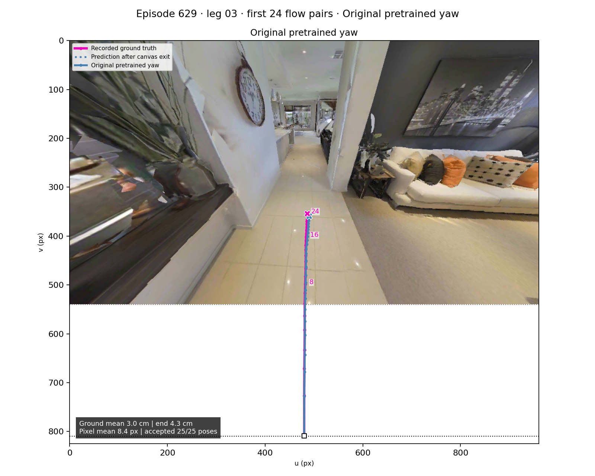

| Model | Mean ground error | Endpoint ground error | Mean pixel error |
|---|---|---|---|
| Trained reference | 3.19 cm | 5.26 cm | 8.86 px |
| Trained soft mask | 3.26 cm | 5.71 cm | 8.23 px |
| Trained yaw-local | 3.01 cm | 3.66 cm | 9.06 px |
| Trained mask + yaw-local | 3.32 cm | 4.16 cm | 9.14 px |
| Original pretrained yaw | 3.02 cm | 4.32 cm | 8.43 px |
Use the ground error when perspective makes the pixel paths hard to judge. These short diagnostic windows do not replace the matched validation benchmark.
Ground paths and errors
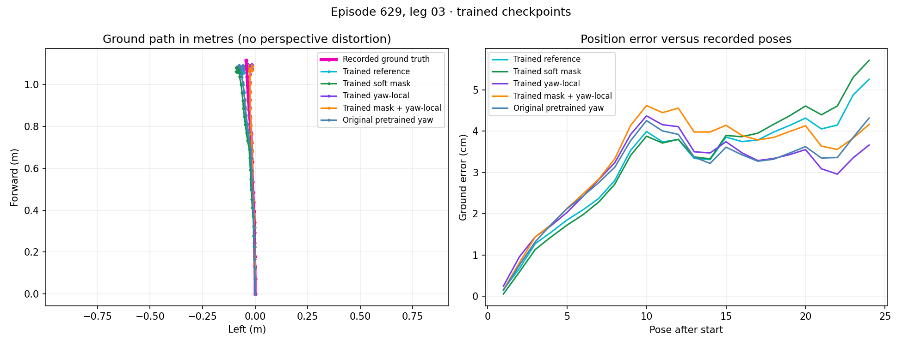
All five models on the camera image
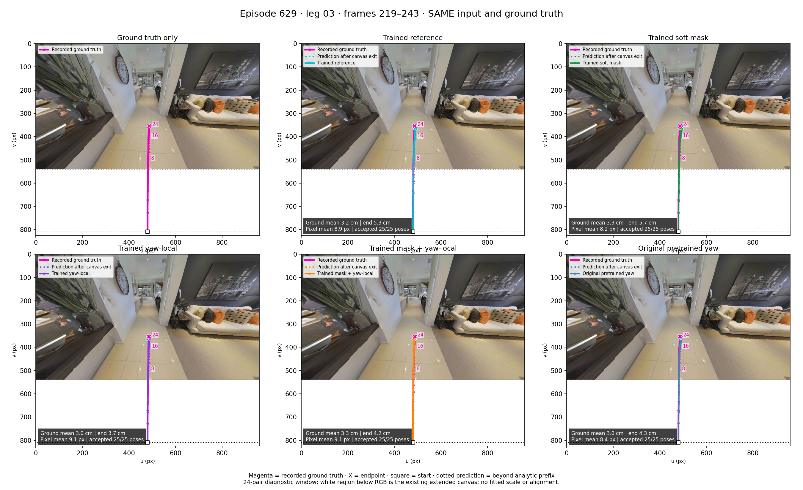
Common crop of all five predictions
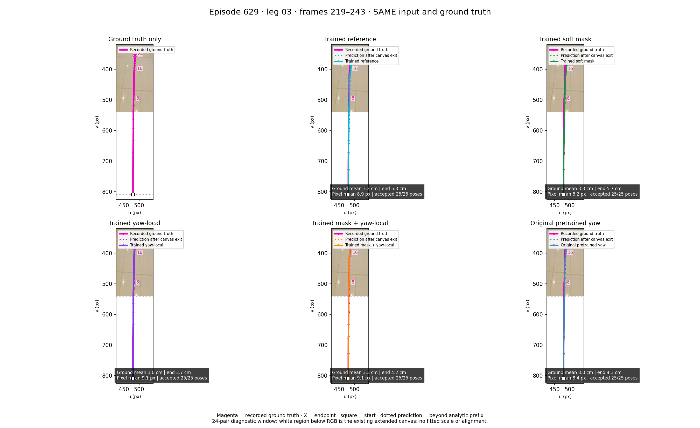
Learned attention on raw frames

Soft reliability and geometric prior

Leg 04
Original pretrained checkpoint

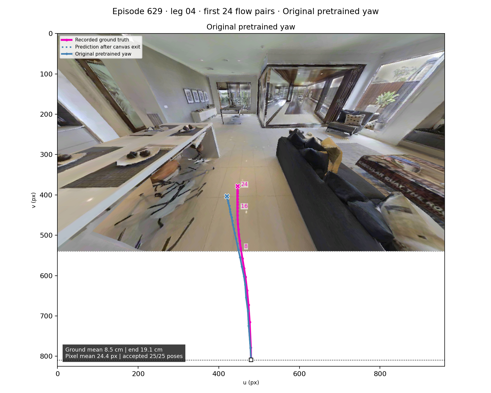

| Model | Mean ground error | Endpoint ground error | Mean pixel error |
|---|---|---|---|
| Trained reference | 9.86 cm | 23.61 cm | 25.02 px |
| Trained soft mask | 10.16 cm | 24.29 cm | 26.10 px |
| Trained yaw-local | 2.92 cm | 5.32 cm | 8.04 px |
| Trained mask + yaw-local | 4.09 cm | 8.16 cm | 11.19 px |
| Original pretrained yaw | 8.47 cm | 19.11 cm | 24.38 px |
Use the ground error when perspective makes the pixel paths hard to judge. These short diagnostic windows do not replace the matched validation benchmark.
Ground paths and errors
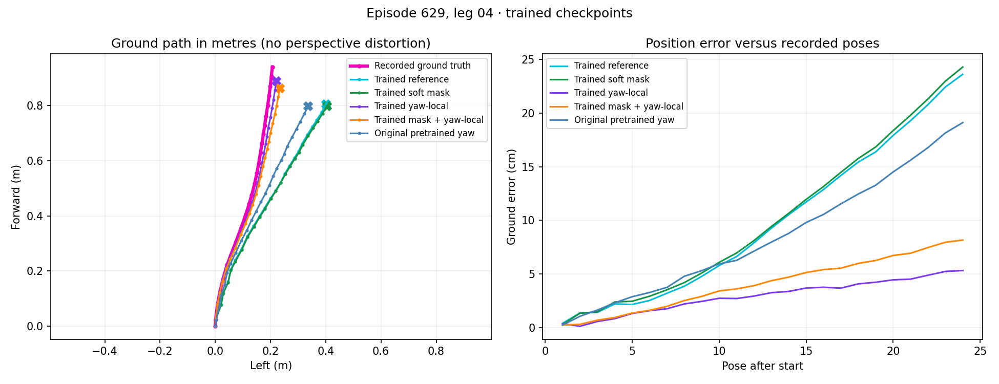
All five models on the camera image
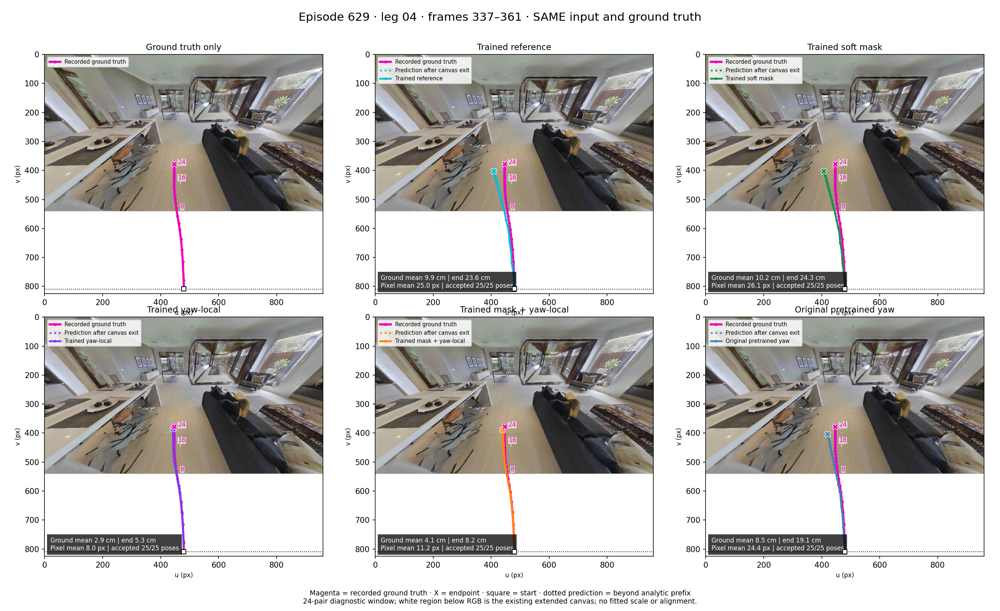
Common crop of all five predictions
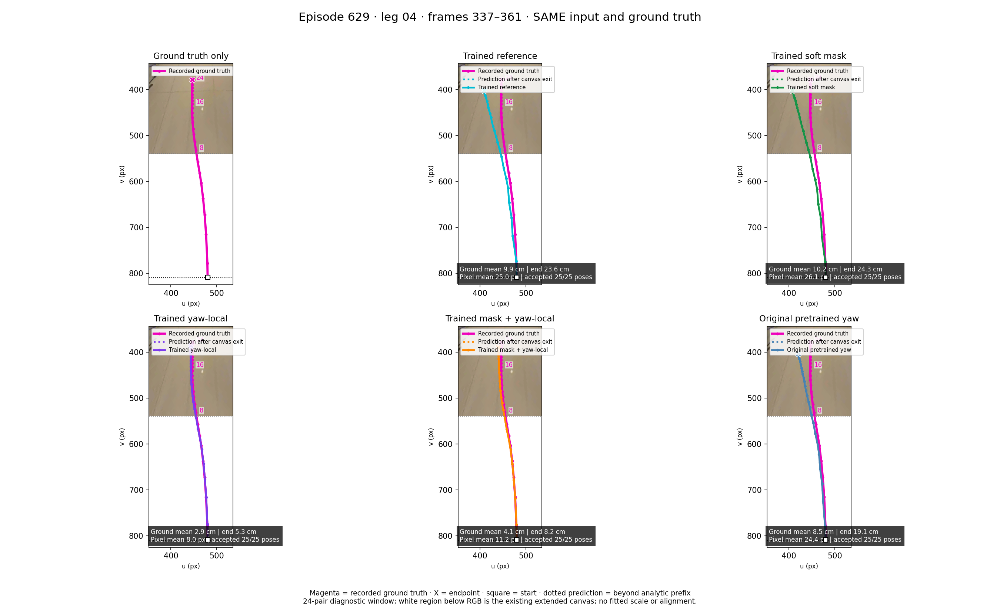
Learned attention on raw frames

Soft reliability and geometric prior

Checkpoints and camera provenance · Artifact verification · All legs contact sheet